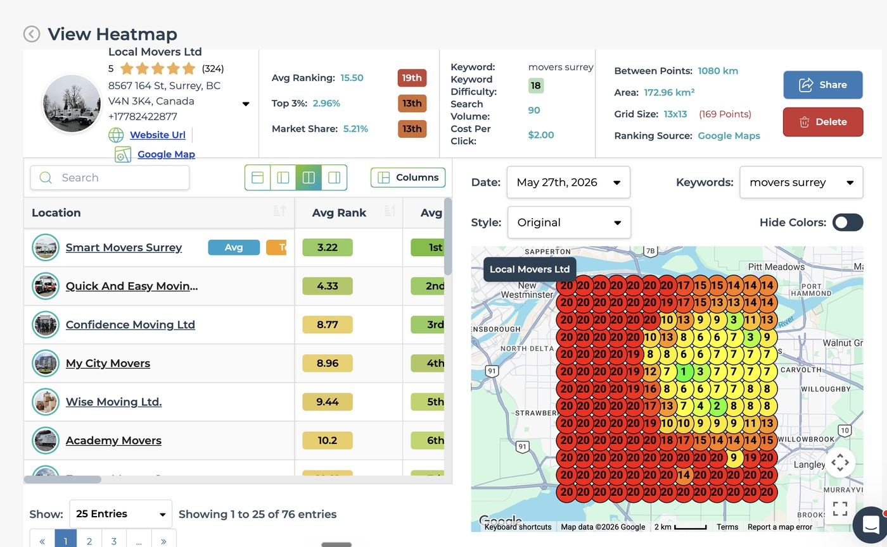

Local Movers Ltd
A Surrey moving company that went from 13th of 76 to first on market share across its own map. Same keyword, same ranking source, same 169 point grid, and the second scan covers more ground than the first. Both LeadSnap exports are below, 27 May and 4 September 2026.
From 13th of 76 to first on market share
Same keyword, movers surrey. Same ranking source, the Google Maps layer. Same grid, 13 by 13, 169 search points. Scanned on 27 May 2026 and again on 4 September 2026. Both exports are below, straight out of LeadSnap.
Before, 27 May 2026
Market share 5.21%, placed 13th
Top 3 coverage 2.96%, also 13th. Average ranking 15.50 across the grid, placed 19th. The competitor table under the map is showing 76 entries, so that 13th is 13th of 76. Area scanned, 172.96 square kilometres.

After, 4 September 2026
Market share 100.00%, placed 1st
Top 3 coverage 45.56%, also 1st. Average ranking 5.43, which places the profile 2nd on the board LeadSnap ranks on that figure. Area scanned, 229.76 square kilometres, so this one covers more ground than the May scan.

1st
Position on market share
First on the September scan. 13th of 76 on the May scan.
100.00%
Market share
Up from 5.21% in May. Placed 1st, from 13th.
45.56%
Top 3 coverage
Points of the 169 reading in the top three. Up from 2.96%.
Reading the pair
Why the two scans are comparable
A before and after is only worth anything if both halves are the same search. These two are. Same keyword, movers surrey. One profile. Same ranking source, the Google Maps layer, which is a different search from the Local Pack layer and never gets mixed with it. Same grid size, 13 by 13, 169 points.
The September scan covers more ground, not less. The May grid spans 172.96 square kilometres. The September grid spans 229.76 square kilometres. A wider map pushes the outer search points further from the shop, and every percentage on it is spread across harder ground. The gain was measured over the bigger of the two maps, not flattered by a tighter one.
The listing was renamed between the two scans. Local Movers Ltd on the May export, Local Movers Surrey Ltd on the September one. Same address, 8567 164 St, Surrey. Same phone, +17782422877. It is one profile, and the rename was part of the work.
First on share and on coverage, second on average ranking. Market share of 100.00% and top 3 coverage of 45.56% both place 1st. Average ranking of 5.43 places 2nd, behind Smart Movers Surrey at 4.25. That is what the September export prints, so that is what this page says.
The May export shows its competitor table at 76 entries, which is where 13th of 76 comes from. The September export is cropped above that line, so the position on it is reported as first on market share and not as first of any count.
The colours read the same way on both. Every dot is one search, green is a top three answer, yellow and orange are further down. In May the grid is red across the whole west side. In September the east and the centre run green and the south edge runs yellow, while the west edge is still orange with red in the top corner. That corner is the part of the map the work has not reached yet.
The panel at the top of each scan is the live profile behind the numbers. 5 stars, 324 reviews in May, 439 in September. Google keeps showing a business its own customers keep rating, and that is a large part of why the map holds.
The challenge
Movers live or die in the map pack
When somebody needs a truck they open Google, look at the three businesses sitting at the top of the map, and call one of them. Everything under that block gets a fraction of the attention. For a local moving company the map pack is not a channel among several, it is close to the whole thing.
Surrey makes that harder than a compact city would. It covers a lot of ground. A profile that looks healthy at the office address can fall away completely a short drive up the road. Local rank is not one number. It is a different number in every part of town. The gaps only show up once you scan a grid and read it cell by cell.
Moving is also a crowded category. National brands, franchise operators and lead brokers chase the same searches with years of reviews and far bigger budgets behind them. An independent has to earn the position on relevance, proximity and prominence, because it is not going to win on spend.
What we did
Four levers, in the same order
The Google Business Profile first. Primary category, secondary categories, service list, service area, hours, description, all set the way Google reads them, not the way an owner would write them. Photos and posts go out on a schedule instead of once at setup. The profile is the thing the map pack actually ranks, so it gets worked every week.
Then the website, service pages and area pages. A page for each service the company really sells, and a page for each neighbourhood it really covers. Area pages are written from real research into the neighbourhood. The streets, the routes, the building types that exist there. Near duplicate pages neither rank nor convert. Schema and index submission are part of the build, not a cleanup pass afterwards.
Then interlinking, so the pages stop competing. Services and areas sit in a clean silo. The hub links down to every page, every page links back up, and neighbouring areas link across. That is what tells Google which page owns which search, and it moves pages that were already written but stranded.
Then citations. Name, address and phone matched across the directory set so nothing on the open web contradicts the profile. Inconsistent listings are quiet drag and they are cheap to fix once the profile itself is settled.
Google Ads runs alongside all of it. Exact match only, tightly themed ad groups, and calls tracked so the paid side gets judged on booked jobs instead of on clicks. Ads cover the searches the organic work has not reached yet, and the search terms report shows which page is worth building next.
- Category
- Moving company
- Service area
- Surrey and the surrounding Metro Vancouver cities
- Engagement
- Local SEO, Google Business Profile, Google Ads. Ongoing
 Get started
Get started
Stop being invisible on Google
Send us your business. You get back a free three minute video: where you sit on your own local map, and what is holding the position down.
One business per category per service area. No long term contract.